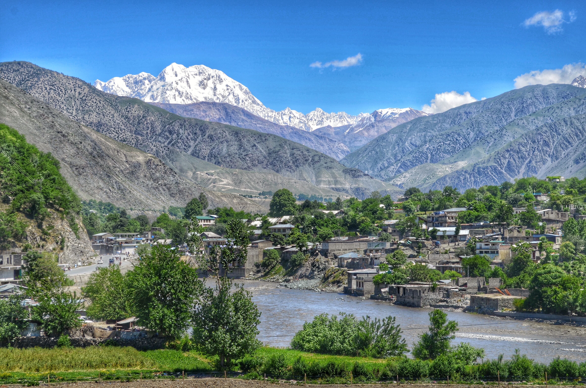

<div class="portfolio-single-load clearfix">
    <div class="custom-full-width-box">
        <div class="custom-container">
            <div class="custom-row align-items-center">
                <div class="custom-image-column">
                    
                </div>
                <div class="custom-text-column">
                    <h2 class="custom-heading">Chitral</h2>
                    <p class="custom-paragraph">
                        
Chitral, nestled in the remote northwestern region of Pakistan, is home to a diverse population that adds to its rich cultural tapestry. With a population of approximately 318,689 people, according to recent estimates, Chitral is a melting pot of various ethnicities, including Chitrali, Kalash, and other ethnic groups.
<br><br>
The people of Chitral lead a traditional way of life, deeply rooted in their cultural heritage and customs. Agriculture and animal husbandry are primary occupations, with many families relying on subsistence farming for their livelihoods. The region's rugged terrain and challenging climate have shaped the lifestyle of its inhabitants, fostering resilience and a strong sense of community.
<br><br>
The Chitrali people are known for their hospitality and warmth towards visitors, reflecting the region's centuries-old tradition of welcoming travelers from distant lands. Despite modern influences, traditional practices such as folk music, dance, and craftsmanship continue to thrive, adding vibrancy to the local culture.
<br><br>
In addition to agriculture, tourism plays a significant role in the economy of Chitral, attracting visitors from around the world eager to explore its natural beauty and cultural treasures. Whether trekking through majestic mountains or immersing oneself in the colorful festivals of the Kalash Valley, visitors are sure to be captivated by the charm and authenticity of Chitral and its people.


                    </p>
                </div>
            </div>
        </div>
    </div><!-- .custom-full-width-box end -->

</div><!-- end single-project -->
